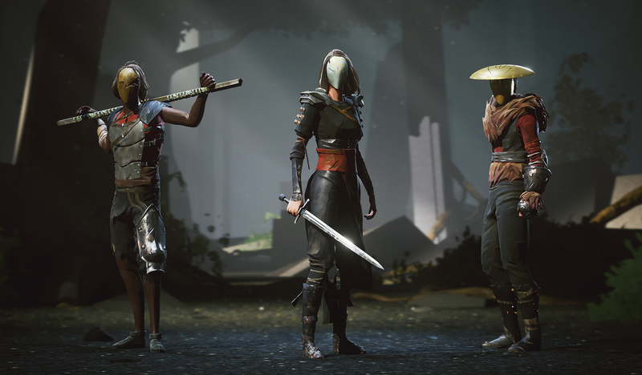
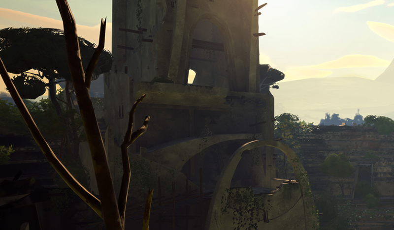
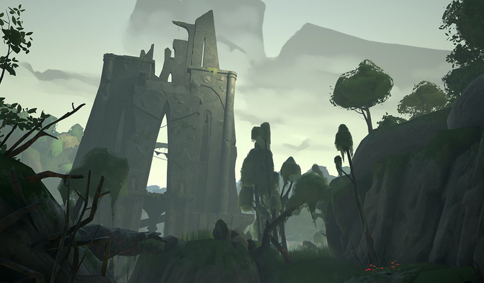

Absolver уже доступен для ПК и PS4
Время пришло, Претенденты
Вот и все. Сегодня Absolver наконец-то доступен для игроков ПК и PS4! Итак, обо всем по порядку: чтобы начать играть на ПК, вы можете зайти в Steam или GOG.com, а игрокам PS4 следует зайти в Playstation Store. Мы хотим поблагодарить вас всех за вашу постоянную поддержку с тех пор, как в прошлом году мы обнародовали проект Absolver, и нам не терпится увидеть, как далеко вы сможете продвинуть нашу игру и сделать ее своей собственной.
Что дальше
Это всего лишь первая важная веха для нас с Absolver. Мы будем регулярно добавлять в игру новые функции и ресурсы, поэтому не забывайте регулярно заходить и проверять! Прямо сейчас мы уже запланировали следующие несколько выпусков, и мы сосредоточены на том, чтобы реализовать те функции, о которых вы просили больше всего:
Частные матчи
Скоро будут добавлены частные матчи 1v1, чтобы вы могли сыграть в Боевых испытаниях 1v1 против конкретного друга, а не со всеми игроками в вашем регионе.
Режим 3v3
Мы уже начали работу над Боевым испытанием 3v3, в котором две команды игроков будут сражаться за победу. В этот режим уже очень интересно играть, но он все еще нуждается в исправлениях багов и полировке, поэтому мы решили выпустить его через несколько недель после запуска. Оставайтесь с нами и следите за напряженным командным рукопашным боем!

Режим наблюдателя
Во время бета-тестирования нам посчастливилось наблюдать за тем, как Absolver будет захватывать игроков. Чтобы каждый мог присоединиться к веселью, мы добавим в игру режим «Наблюдатель», чтобы вы могли вдохновиться другими игроками и их собственным мастерством владения механикой игры.

Новый сайт
Как вы, возможно, уже заметили, мы размещаем эту новость на новом сайте, который мы создали, чтобы держать всех игроков в курсе того, что происходит с игрой. Мы включили в него форумы, где вы сможете обсудить механику, стратегии, мнения, а также найти других игроков-единомышленников. Заходите сюда чтобы вступить в сообщество!
